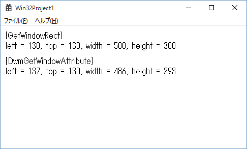

ウィンドウの位置とサイズの取得方法について記載します。
Windows Vista
以降のエアロ環境で動作する場合、正しく実装しないと誤差を生じるので注意が必要です。
1. GetWindowRect による方法
2. DwmGetWindowAttribute による方法
3. テストプログラム
Window95以降で使用可能な伝統的手法です。
RECT rect; BOOL result; result = GetWindowRect( hWnd, &rect); |
上記処理で RECT 情報を取得することで、ウィンドウの位置およびサイズを以下のように確認できます。
LEFT: rect.left
TOP:
rect.top
WIDTH: rect.right - rect.left
HEIGHT:
rect.bottom - rect.top
Windows Vista 以降で採用されたエアロ環境（ウィンドウマネージャ― DWM を動作している環境）では、前述の GetWindowRect
で取得した情報は実際のウィンドウ位置およびサイズと差異が生じます。特に Windows10環境では誤差が大きくなるため注意が必要です。
エアロ環境で正しくウィンドウ位置およびサイズを取得するためには、 API
DwmGetWindowAttribute を "DWMWA_EXTENDED_FRAME_BOUNDS" の属性を使って情報を取得する必要があります。
注意：
・DwmGetWindowAttribute は Vista 以降のみサポートのAPIです。
・Vista/7
ではエアロをON/OFFできます。エアロのON/OFFをチェックして、エアロがONのときのみ DwmGetWindowAttribute
を使用する必要があります。OFFの時は従来のウィンドウサイズ取得を使用します。これをしないとまた誤差を生じます。
・Form
にて使用する場合、ウィンドウの Load イベント中で DwmGetWindowAttribute
を使用したら正しく値を取得できませんでした。ウィンドウの起動完了から一定の時間が経過した後に情報を取得する必要がある可能性があります。
RECT rect;
HRESULT hResult;
BOOL bResult;
BOOL bDwmEnable;
hResult = DwmIsCompositionEnable( &bDwmEnable );
if ( S_OK == hResult ){
if ( bDwmEnable ){
// エアロ環境
hResult = DwmGetWindowAttribute( hWnd, DWMWA_EXTENDED_FRAME_BOUNDS, &rect, sizeof(rect));
}
else{
// 非エアロ環境
bResult = GetWindowRect( hWnd, &rect);
}
}
|
上記処理で RECT 情報を取得することで、ウィンドウの位置およびサイズを以下のように確認できます。
LEFT: rect.left
TOP:
rect.top
WIDTH: rect.right - rect.left
HEIGHT:
rect.bottom - rect.top
Windows10 環境にて、GetWindowRect と DwmGetWindowAttribute で得られる情報の差異を実際に確認してみます。
シンプルに Win32 のプロジェクトとして作成してみます。
[環境]
[実行結果]
実行結果は下図の通りです。
”DwmGetWindowAttribute” で取得した値が正しい情報です。
左右でそれぞれ 7画素、下に
7画素、誤差があることがわかります。

[プログラムソース]
プロシージャコールを抜粋で記載します。
全体については、サンプルダウンロードから取得して確認してください。
LRESULT CALLBACK WndProc(HWND hWnd, UINT message, WPARAM wParam, LPARAM lParam)
{
switch (message)
{
case WM_MOVE:
InvalidateRect(hWnd, NULL, FALSE);
break;
case WM_PAINT:
{
PAINTSTRUCT ps;
HDC hdc = BeginPaint(hWnd, &ps);
RECT rect1;
RECT rect2;
BOOL result1;
HRESULT result2;
// TODO: HDC を使用する描画コードをここに追加してください...
// ウィンドウサイズを取得
{
// GetWindowRect で取得
{
result1 = GetWindowRect(hWnd, &rect1);
}
// DwmGetWindowAttribute で取得
{
BOOL bDwmEnable;
result2 = DwmIsCompositionEnabled(&bDwmEnable);
if (S_OK == result2) {
if (bDwmEnable) {
DwmGetWindowAttribute( hWnd, DWMWA_EXTENDED_FRAME_BOUNDS, &rect2, sizeof(rect2));
}
}
}
}
// 画面にウィンドウサイズを書く
{
TCHAR str[256];
TCHAR* title1 = _T("[GetWindowRect]");
TCHAR* title2 = _T("[DwmGetWindowAttribute]");
if (TRUE == result1) {
_stprintf_s(str, _T("left = %d, top = %d, width = %d, height = %d"),
rect1.left, rect1.top, rect1.right - rect1.left, rect1.bottom - rect1.top);
TextOut(hdc, 10, 10, title1, _tcslen(title1));
TextOut(hdc, 10, 30, str, _tcslen(str));
}
if (S_OK == result2) {
_stprintf_s(str, _T("left = %d, top = %d, width = %d, height = %d"),
rect2.left, rect2.top, rect2.right - rect2.left, rect2.bottom - rect1.top);
TextOut(hdc, 10, 60, title2, _tcslen(title2));
TextOut(hdc, 10, 80, str, _tcslen(str));
}
}
EndPaint(hWnd, &ps);
}
break;
case WM_DESTROY:
PostQuitMessage(0);
break;
default:
return DefWindowProc(hWnd, message, wParam, lParam);
}
return 0;
}
|
サンプルプログラム ダウンロード
記載： 2015年08月29日 木下英俊